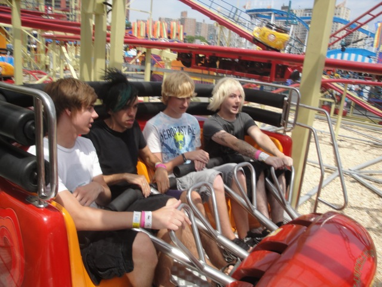

| |
Tickler Review

All right. We're here at Coney Island, or more specifically, Luna Park since it's really three parks put together, where we're going to review the Tickler. The park's spinning mouse with a good classic theme. We get into our cars and away we go. We roll through a turn and through some straight track and then head up the lifthill. You head off the lifthill and into a turn. But as we're rolling through the upper set of switch backs, we notice that something is off here. We're spinning. HOLY CRAP!!! Usually these things don't spin until the second half, but on this one, we're spinning throughout the entire ride! SWEET!!! =) After the switchbacks, you head into a small drop and back up the small hill. This is fun. We then head into the biggest drop of the ride. We gain some speed as we dip to the ground. And since we've been spinning throughout the entire ride, you have no idea what direction you'll face heading down the drop. So you might just drop sideways, which is quite an interesting experience. We then head into some double up thing which sadly, but not suprisingly, has no airtime. We then jolt around another turn and head into the second set of switchbacks. These switchbacks are pretty much just like the first set up in the air. We're spinning, but its not that dizzying. And damn it! I wanna get dizzy! But hey, at least I've been spinning the entire time. We then go through the final little dip and bump. This is where the ride really starts to get spinning. But unfortunetly after that, we rise up and turn into the final brakes. This is one of the more interesting spinning mice coasters. But that's only because it's always spinning. Its a fun little coaster that while its not amazing or anything, really does fit into Coney Island perfectly. So give Zamperla credit where credit is due. Check it out if spinning mice are your thing or you just wanna explore all there is at Coney Island.
6/10
Location: Coney Island
Opened: 2010
Built by: Zamperla
Last Ridden: June 16, 2021
I have ridden this exact same ride at the following parks.
American Fairs
Mt. Olympus
Six Flags America
Six Flags Great America
Tivoli Friheden
Tickler Photos





Home
|